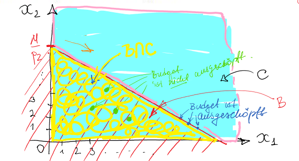

Kapitel 2 Grundlagen
2.1 Mengen und Zahlen
In unserem Beispiel zur Nutzenmaximierung haben wir uns überlegt, welche Konsummöglichkeiten (\(x=\# Donuts\) und \(y=\# Kaffee\)) der Studierende Alex sich leisten kann. Wie wir gesehen haben, gibt es mehrere finanzierbare Konsumkombinationen \((x,y)\) für Alex, zwischen denen er wählen kann. Es ist sinnvoll solche Konsummöglichkeiten, die bestimmte Kriterien erfüllen, als eine Menge zu betrachten. Alex wird seinen Nutzen maximieren, indem er aus dieser Menge der für ihn erreichbaren Konsumbündel, die Konsumkombination, die ihm den maximalen Nutzen bringt, auswählt.
Doch was ist eine Menge und wie kann man sie definieren?
Definition 2.1 (Mengen) Eine Menge ist eine Zusammenfassung unterschiedlicher Objekte.
Eine Menge kann dargestellt werden durch:
Aufzählen der Elemente \(M=\{x_1,x_2,\ldots\}\) (explizite Darstellung),
Angabe einer Eigenschaft \(P(x)\), die die Elemente charakterisiert, \(M=\{x:P(x)\}\) (implizite Darstellung).
Beispiel 2.1 (Die Menge der geraden Zahlen zwischen 1 und 11)
Die Menge der geraden Zahlen zwischen 1 und 11 kann dargestellt werden …
- in der expliziten Darstellung: \(M=\{2,4,6,8,10\}\)
oder
- in der impliziten Darstellung: \(M=\{x:x \text{ ist eine gerade Zahl zwischen 1 und 11}\}\)
Falls das Objekt \(x\) Element der Menge \(M\) ist, schreiben wir \(x\in M,\) ansonsten \(x\not\in M\).
Im Fall von Alex‚Äô Budgetmenge nutzt man die implizite Darstellung, denn alle erreichbaren Kombinationen aufzuschreiben w√ºrde viel zu lange dauern üòÖ.
Beispiel 2.2 (Alex' Konsummenge) Wenn man ihm genug Zeit gibt, kann Alex beliebige (nicht-negative) Mengen von Kaffee und Donuts konsumieren. Seine Konsummenge kann dann wie folgt aufgeschrieben werden:
\(C=\{(x,y):x\geq 0,y\geq 0\}\)
Die Menge der für Alex erreichbaren Konsumbündeln aus Kaffee und Donuts definiert man als:
\(B=\{(x,y): x\cdot P_X+y \cdot P_Y\leq Budget\}\)
Dann gilt für \(Budget=200\), \(P_X=2\) und \(P_Y=4\): \[(30;10)\in B\] \[(99;1)\not \in B \]
Nehmen wir nun an, Alex möchte seinen Konsum von süßen und nicht so gesunden Donuts begrenzen. Er möchte nun nicht mehr als \(30\) Donuts pro Monat verzerren.
Hat sich nun seine Konsummenge verändert?
Hier helfen uns die Mengenrelationen (Teilmenge) weiter…
Definition 2.2 (Teilmengen) Falls alle Elemente einer Menge \(X\) auch Elemente einer Menge \(Y\) sind, dann ist \(X\) eine Teilmenge von \(Y\), formal:\[X\subseteq Y\]
Falls darüber hinaus nicht alle Elemente von \(Y\) in \(X\) sind, dann ist \(X\) eine echte Teilmenge von \(Y\), formal: \[X\subset Y\]
Zwei Mengen \(X\) und \(Y\) sind gleich, falls sie dieselben Elemente enthalten, formal: \[X=Y\]
Also: \(X=Y\Leftrightarrow X\subseteq Y\text{ und } Y\subseteq X\).
Beispiel 2.3 (Teilmenge) Es seien \[\mathbb N = \{x:x \text{ ist eine positive ganze Zahl},\] \[A=\{x\in \mathbb N:x\leq 11\}=\{1,2,3,4,5,6,7,8,9,10,11\}\]
Dann gilt: \(A\subset \mathbb N\).
Venn-Diagramm:
Nun zurück zu Alex und seiner selbst auferlegten Auflage, nicht mehr als \(30\) Donuts im Monat zu essen.
Beispiel 2.3 (Alex' Konsummenge unter Bedingung) Seine neue Konsummenge ist: \[C_{neu} = \{(x;y):0\leq x\leq 30,y\geq 0\}\] Dann gilt: \(C_{neu}\subset C\). Denn alle Konsumkombinationen aus \(C_{neu}\) sind auch in \(C\) enthalten, aber in \(C\) sind auch weitere Konsumkombinationen enthalten, wie z.B. \((45,90)\), die durch die Restriktion \(\#Donuts\leq 30\) nicht in \(C_{neu}\) enthalten sind.
Graphisch:
Abbildung 2.1: Konsummenge mit (rechts) und ohne Restriktion auf Donuts (links).
2.1.1 Mengenoperationen
Alex hat nun ein weiteres Problem: die Lieblingsdonuts sind teurer geworden und kosten nun \(5\) Euro. Eine gute Nachricht gibt es trotzdem - in der Mensa kostet eine Tasse Kaffee nur \(1\) Euro. Somit verändert sich die Budgetmenge von Alex. Wie kann man die neue Situation mit der Situation davor vergleichen? Hier helfen uns die Mengenoperationen weiter.
Wir definieren noch die Universalmenge, hier ausgedrückt mit \(U\). Das ist die größte Menge, mit der wir in einem bestimmten Kontext arbeiten. Die leere Menge (oder die Nullmenge) enthält keine Elemente, diese wird als \(\emptyset\) notiert.
Es ist sinnvoll für Alex’ Entscheidungsproblem die hypothetische Konsummenge \(C=\{(x,y):x\geq 0,y\geq 0\}\) als Universalmenge festzulegen. Wenn Alex’ Budget \(0\) Euro beträgt, ist seine Budgetmenge die leere Menge.
Definition 2.3 (Durchschnitt und Vereinigung)
Der Durchschnitt zweier Mengen \(X\) und \(Y\) ist die Menge, deren Elemente sowohl in \(X\) als auch in \(Y\) enthalten sind; formal:
\(X\cap Y=\{x:x\in X \text{ und } x\in Y\}\)
Falls \(X\cap Y=\emptyset\), dann sind \(X\) und \(Y\) disjunkt.
Die Vereinigung zweier Mengen \(X\) und \(Y\) ist die Menge, deren Elemente in mindestens einer der Mengen \(X\) und \(Y\) enthalten sind; formal:
\(X\cup Y=\{x:x\in X \text{ oder } x\in Y\}\) 
Aufgabe 2.1 (Mengenoperation 1) Es sei \(\mathbb N\) die Universalmenge, ferner
\(X=\{x\in \mathbb N:x\leq 20 \text{ und } x/2\in \mathbb N\}\), sowie
\(Y=\{x\in \mathbb N:10\leq x\leq 24 \text{ und } x/2\in \mathbb N\}\)
Was sind \(X\cap Y\) und \(X\cup Y\)? Was sind \(X\cap \mathbb N, X\cup \mathbb N, Y\cap\mathbb N\text{ und } Y\cup\mathbb N\)?
Antwort
\(X\cap Y = \{x\in \mathbb N: 10\leq x\leq 20\text{ und } x/2\in \mathbb N\}\), \(X\cup Y = \{x\in \mathbb N: x\leq 24\text{ und } x/2\in \mathbb N\}\), \(X \cap \mathbb N=X\),\(X \cup \mathbb N=\mathbb N\), \(Y \cap \mathbb N=Y\)und \(Y \cup \mathbb N=\mathbb N\)
Neben dem Schnitt und Vereinigung zweier Mengen wird Komplementenbildung und Mengendifferenz häufig benötigt.
Definition 2.4 (Komplement und Differenz) Das Komplement einer Menge \(X\) ist die Menge aller Elemente, die in \(U\) aber nicht in \(X\) enthalten sind; Notation: \(\overline X\).
\(\overline X=\{x\in U:x\not \in X\}\)
Die Differenz \(X\setminus Y\), manchmal auch \(X−Y\), ist die Menge aller Elemente in \(X\), die nicht in \(Y\) enthalten sind:
\(X\setminus Y=\{x\in U:x\in X \text{ und } x\not\in Y\}\) 
Aufgabe 2.2 (Mengenoperation 2)
- Zeige graphisch, dass \(X\setminus Y=X\cap\overline Y\)
Es seien \(\mathbb N, X, Y\) wie in der vorigen Übung.
- Was sind die Komplemente von \(\mathbb N, X, Y\)
- Was ist \(X\cap \overline Y\)?
- Was ist \(X\cup \overline Y\)?
Antwort
\(\overline{N}=\emptyset\), \(\overline{X}=\{x\in \mathbb N: x\geq 21 \text{ oder } x \text{ ungerade }\}\), \(\overline{Y}=\{x\in \mathbb N: x\leq 9 \text{ oder }x\geq 25 \text{ oder } x \text{ ungerade }\}\)
\(\overline{X\cap Y} = \{x\in \mathbb N: x\leq 9 \text{ oder }x\geq 20 \text{ oder } x \text{ ungerade }\}\), \(\overline{X\cup Y}=\{x\in \mathbb N: x\geq 25 \text{ oder } x \text{ ungerade }\}\)
Es seien \(\mathbb N, X, Y\) wie in der vorigen Übung.
- Was ist die Differenz \(X\setminus Y\)?
- Was ist \(Y\setminus X\)?
Antwort
\(X\setminus Y =\{x\in \mathbb N, x < 10 \text{ und } x/2\in\mathbb N\}\)
\(Y\setminus X = \{x\in \mathbb N: 20<x\leq 24 \text{ und } x/2\in \mathbb N\}\)
Aufgabe 2.3 (Alex' Konsummenge und Budget)
Die Konsummenge von Alex ist gegeben als \(C=\{(x_1,x_2):x_1\geq 0,x_2\geq 0\}\).
Die dazugehörige Budgetmenge für Alex ist \(B=\{(x_1,x_2):p_1x_1+p_2x_2\leq M\}\),
wobei \(x_1,x_2\) die Mengen der Güter, \(p_1,p_2\) die Preise und \(M\) das Einkommen bezeichnen.
Illustrieren Sie die folgenden Mengen in einem Diagramm:
- \(B,C\)
- \(B\cap C\)
Interpretieren Sie die einzelnen Mengen.
Antwort

2.2 Zahlenmengen
Definition 2.4 (Einige Zahlenmengen) Die Menge der natürlichen Zahlen ist \(\mathbb N= \mathbb Z_+ = \{1,2,3,...\}\)
Die Menge der ganzen Zahlen ist \(\mathbb Z = \{...,−3,−2,−1,0,1,2,3,...\}\)
Die Menge der rationalen Zahlen ist \(\mathbb Q=\{\frac ab:a\in \mathbb Z, b\in \mathbb Z\setminus\{0\}\}\)
Eigenschaften:
- Es gilt: \(\mathbb{N}\subset \mathbb{Z}\subset \mathbb{Q}\).
- Die Menge \(\mathbb{N}\) ist geschlossen unter Addition und Multiplikation, d.h. für alle \(a, b \in\mathbb{N}\) gilt: \(a + b \in\mathbb{N}\), \(a\cdot b \in\mathbb{N}\).
- Die Menge \(\mathbb{Z}\) ist geschlossen unter Addition, Subtraktion und Multiplikation, d.h. für alle \(a, b \in\mathbb{Z}\) gilt: \(a + b \in \mathbb{Z}\), \(a - b \in\mathbb{Z}\), \(a \cdot b ∈\) \(\mathbb{Z}\).
-
Die Menge \(\mathbb{Q}\) ist geschlossen unter Addition, Subtraktion, Multiplikation und Division (mit Ausnahme von Division durch 0), d.h. für alle \(a, b \in\mathbb{Q}\), \(c \neq 0\) gilt:
\(a + b \in\mathbb{Q}\), \(a - b \in\mathbb{Q}\), \(a \cdot b \in\mathbb{Q}\), \(a/c \in\mathbb{Q}\).
Beispiele
- Die Menge \(\mathbb N\): Anzahl Mitarbeiter in einem Unternehmen, Anzahl Kunden in einem Unternehmen
- Die Menge \(\mathbb Z\): Zuwachs/ Abgang Kunden oder Mitarbeitern (absolut)
- Die Menge \(\mathbb Q\): Der Anteil Bestandskund*innen/Mitarbeiter*innen in Vollzeit
Aufgabe 2.4 (Zahlenmengen) Zeige per Gegenbeispiel, dass \(\mathbb N\) nicht geschlossen ist unter Subtraktion und Division.
Antwort
zum Beispiel: \(4; 5\in\mathbb{N}\)
\(4-5=-1 \notin\mathbb{N}\rightarrow\mathbb{N}\) ist nicht geschlossen unter Subtraktion
\(4 / 5\notin\mathbb{N}\rightarrow\mathbb{N}\) ist nicht geschlossen unter Division
Es existieren Zahlen außerhalb von \(\mathbb Q\), die sogenannten irrationalen Zahlen.
Beispiel: \(\sqrt2\) ist irrational.
Definition 2.5 (Reele Zahlen) Die Vereinigung der rationalen und irrationalen Zahlen ergibt die Menge der reellen Zahlen \(\mathbb R\).
Die folgenden Eigenschaften werden als Axiome unterstellt:
Abgeschlossenheit: für alle \(a,b\in\mathbb R\) gilt \(a+b\in\mathbb R\) und \(a\cdot b\in\mathbb R\)
Kommutativgesetze: für alle \(a,b\in\mathbb R\) gilt \(a+b=b+a\), \(a\cdot b=b\cdot a\)
Assoziativgesetze: für alle \(a,b,c\in\mathbb R\) gilt \(a+(b+c)=(a+b)+c\) und \(a\cdot (b\cdot c)=(a\cdot b)\cdot c\)
Distributivgesetz: für alle \(a,b,c\in\mathbb R\) gilt \(a\cdot (b+c)=a\cdot b+a\cdot c\)
Nullelement: das Element \(0\in\mathbb R\) besitzt die Eigenschaft, \(a\in\mathbb R\) dann \(a+0=a\) und \(a\cdot 0=0\)
Eins-Element: das Element \(1\in\mathbb R\) besitzt die Eigenschaft, \(1\cdot a=a\)
Inverses additives Element: für jedes \(a\in\mathbb R\) hat \(−a\in\mathbb R\) die Eigenschaft \(a+(−a)=0\)
Inverses multiplikatives Element: für \(a\in\mathbb R \setminus\{0\}\), hat \(\frac 1a \in\mathbb R\) die Eigenschaft \(a\cdot\frac 1a=1\).
Definition 2.5 (Teilmengen von reelen Zahlen)
Die Menge \(\mathbb R_{++}\subset\mathbb R\)
enthält die (streng) positiven Zahlen. Es gilt:
- \(\mathbb R_{++}\) ist geschlossen unter Addition und Multiplikation.
- Für jedes \(a\in\mathbb R\) gilt exakt eine der folgenden Eigenschaften: \(a\in\mathbb R_{++}\)oder \(a=0\) oder \(−a\in\mathbb R_{++}\).
Die Menge \(\mathbb R_+ = \mathbb R_{++}\cup \{0\}\) ist die Menge der nicht-negativen Zahlen.
Manchmal muss man die Zahlen miteinander vergleichen oder eine Eigenschaft angeben, die eine Relation zu einem Zahl darstellt. In diesem Fall sind Ungleichungen nützlich.
Definition 2.6 (Ungleichungen)
Die strenge Ungleichung \(>\) und die schwache Ungleichung \(\geq\) sind wie folgt definiert:
Falls \(a+b\in\mathbb R_{++}\), dann \(a>b\)
Falls \(−(a−b)\in\mathbb R_{++}\), dann \(b>a\)
Falls \(a−b\in\mathbb R_+\), dann \(a\geq b\)
Falls \(−(a−b)\in\mathbb R_+\), dann \(b\geq a\).
Wird, zum Beispiel, geplant einige Mitarbeiter mit den Eigenschaften:
- mindestens 5 Jahre Betriebszugehörigkeit (\(X\)),
- mehr als 1000 Euro Monatsverdienst (\(Y\)),
- weniger als 10 Krankheitstage im letzten Jahr (\(K\)),
- die höchsten 45 Jahre alt sind (\(Z\))
zu befragen, so kann der gewünschte Zielkreis mittels Ungleichungen wie folgt eingegrenzt werden: \(X\geq 5,Y>1,K<10 \text{ und } Z\leq 45\).
Häufig möchte man keine bloßen Zahlen betrachten, sondern die Abweichungen zu einem Sollwert ohne die Richtung der Abweichung miteinzubeziehen. In diesem Fall braucht man die Beträge dieser Abweichungen.
Definition 2.7 (Betrag) Der Betrag (auch Absolutwert, “Vorzeichenkiller”) von \(x\in\mathbb R\) ist definiert als
\(|x|=\begin{cases}x, &\text{ falls } x\geq 0,\\ -x, &\text{ falls } x<0\end{cases}\)
Betrachten Sie als Beispiel die Abweichungen von monatlichen Umsätzen zum Jahresdurchschnitt:
- Monat 1: \(−1250,2\) Euro
- Monat 2: \(−135,5\) Euro
- Monat 3: \(680\) Euro
- Monat 4: \(55\) Euro
Wie lautet die mittlere Abweichung?
Die Beträge der Umsatzabweichungen sind: \(1250,2;135,5;680;55\) Euro. Die Mittlere Abweichung ist also: \(530,175\) Euro. Hätte man die mittlere Abweichung ermittelt, ohne den Betrag vorher zu nehmen, würden sich positive und negative Abweichungen gegenseitig weghebeln, so dass man das Ergebnis nicht als mittlere Abweichung ansehen könnte.
Dies wird durch die folgende Dreiecksungleichung verdeutlicht.
Theorem 2.1 (Dreiecksungleichung) Für alle \(x,y\in\mathbb R\) gilt: \[|x+y|\leq|x|+|y|\]
Beweis:
Es gilt \(x\leq|x|\) und \(y\leq|y|\), woraus folgt:
\(x+y\leq |x|+|y|\).
Analog gilt: \(−x\leq|x|\) und \(−y\leq |y|\), so dass \(−(x+y)\leq |x|+|y|\).
Die Summe der Abweichungen von Monat 2 und Monat 3 ist im Betrag \(544,5=|−135,5+680|\), was kleiner als die Summe der einzelnen Beträge \(815,5=|−135,5|+|680|\) ist.
2.3 Punktmengen in \(\mathbb R^n\)
Häufig hat man die Situation, in der mehrere Objekte oder Personen oder deren Verhalten verglichen werden müssen. Die letzteren werden durch ein oder mehrere Werte repräsentiert. Diese einzelne Werte aus \(\mathbb R\) oder Tupeln von mehreren Werten aus \(\mathbb R ^ 2, \mathbb R^3,\ldots\) können wir immer als Punkte im geeigneten Koordinatensystem darstellen. Dies ermöglicht, die Ähnlichkeit der Objekte oder Personen zu ermitteln, indem man den Abstand zwischen den Punkten misst.
- Die reelle Linie \(\mathbb{R}\) eignet sich, wenn jedes Objekt mittels nur einer Zahl beschrieben wird. Diese markiert dann jeweils einen Punkt auf dem Zahlenstrahl:

Beispiel 2.4 (reele Linie) Die Konsument*innen Alex, Tina und Amy werden hinsichtlich deren Kontostand (\(x\)) verglichen. Alex hat \(500\) Euro, Tina hat \(250\) Euro und Amy hat \(-600\) Euro auf dem Konto. Wie sehen diese Kontostände auf der reellen Linie als Punkte aus?
- Der Raum \(\mathbb{R^2}\), definiert über das kartesische Produkt die zweidimensionale Sicht:
\(\mathbb R ⊗ \mathbb R = \left\{ {(x,y) : x \in \mathbb R, y \in\mathbb R} \right\} =\mathbb R^2\)

Beispiel 2.5 (zweidimensionaler reeler Raum) Die Konsument*innen Alex, Tina und Amy werden hinsichtlich deren Kontostand (\(x\)) und der Veränderung deren Konsumausgaben (\(y\)) zum letzten Monat verglichen. Alex Verhalten wird durch das Tupel (Kontostand; Veränderung der Konsumausgaben \(=(x;y)\)) \((500; 300)\), Tinas durch \((250; -200)\) und Amys durch \((-600; 200)\) beschrieben. Wie sehen die verschiedenen Konsumverhalten dieser Konsument*innen als Punkte im Koordinatensystem aus?
- Der Raum \(\mathbb{R^3} \left\{ {(x, y, z) : x \in\mathbb R, y \in\mathbb R, z \in\mathbb R}\right\}\) ermöglich die Analyse von drei dimensionalen Punkten.

Beispiel 2.6 (dreidimensionaler reeler Raum) Alex, Tina und Amy als Arbeitnehmer*innen werden hinsichtlich deren Gehalts- \(x\), Produktivitätsveränderung \(y\) und Zielerreichungsscore \(z\) abgebildet. Deren Verhalten wird durch den Tupel (Gehalt; Produktivität; Zielerreichung) \(=(x;y;z)\) abgebildet. Tinas Beschreibung ist \((3; 2,5; 2)\), Alex \((-2; -5; -2,5)\) und Amys \((-3; 1,2; 1,5)\). Wie sehen die verschiedenen Eigenschaften der Mitarbeiter*innen als Punkte im Koordinatensystem aus?
- Der Raum \(\mathbb{R^n}\): ermöglicht die Abbildung von mehrdimensionalen Punkten. Zum Beispiel, wenn man weitere Eigenschaften von Mitarbeiter*innen miteinbezieht. Die Visualisierung ist an der Stelle schwierig, aber die multivariate Analyse dieser Punkte auch die Berechnung von Abstand kann problemlos durchgeführt werden. \[\mathbb R^n = \left\{ {(x_1,x_2, ... , x_n) : x_i \in\mathbb R, 1 \leq i \leq n}\right\} \] Teilmengen von \(\mathbb{R^n}\): Punktmengen.
2.3.1 Intervalle als Punktmengen in \(\mathbb{R}\)
Wichtige Punktmengen im \(\mathbb{R}\) sind Intervalle.
Beispiel 2.7 (Intervalle als Punktmengen) Die Personalchefin von Alex, Tina und Amy könnte z.B. nur Angestellte mit negativem Gehaltsscore im Intervall von \(-5\) bis \(-1\) in einer Auswertung betrachten. Dabei hätte sie mehrere Optionen festzulegen. Sollen die Mitarbeitende mit dem Score \(0\) berücksichtigt werden oder sind sie noch außen vor? Bisher gab es keine Gehaltscores jenseits von \(-5\). Sollen aber künftig auch die Personen, die einen kleineren Score als \(-5\) haben, in der Auswertung berücksichtigt werden? Im ersten Fall würden wir das entsprechende Intervall als \([-5;0]\), in dem zweiten - als \([-5;0)\) und im dritten Fall (bei Ja) - \((-\infty; 0)\) aufschreiben.
Dementsprechend unterscheidet man für \(a, b \in \mathbb R, \ a < b\):
Beschränkte Mengen:
Geschlossenes Intervall (Die Grenzen \(a\) und \(b\) sind im Invall enthalten): \[\left[ a, b \right] = \left\{ {x ∈ \mathbb{R} : a \leq x \leq b} \right\} \]
Halb-offenes Intervall (Einer der Endpunkte \(a\) oder \(b\) ist im Invall enthalten und der andere nicht): \[[a, b) = \left\{ {x ∈ \mathbb{R} : a \leq x < b}\right\} \] \[(a, b] = \left\{ {x \in \mathbb{R} : a < x}\leq b\right\} \]
Offenes Intervall (Die Grenzen \(a\) und \(b\) sind im Invall nicht enthalten): \[(a, b) = \left\{ {x \in R : a < x < b}\right\} \]
Unbeschränkte Mengen (Das Zeichen \(\infty\) steht für die Unendlichkeit):
- Nach oben unbeschränktes Intervall: \[[a, \infty) = \left\{ {x \in \mathbb R : a \leq x}\right\} \] \[(a, \infty) = \left\{ {x \in \mathbb R : a < x}\right\} \]
- Nach unten unbeschränktes Intervall: \[(−\infty, b] = \left\{ {x \in \mathbb R : x \leq b}\right\} \] \[(−\infty, b) = \left\{ {x \in \mathbb R : x < b} \right\} \]
2.3.2 Eigenschaften des \(\mathbb R^n\): Abstand
Wie könnte nun die Personalchefin im Beispiel 2.6 die Arbeitnehmer*innen Alex, Tina und Amy hinsichtlich deren Gehalts-\(x\), Produktivitätsveränderung \(y\) und Zielerreichungsscore \(z\) vergleichen?
Deren Verhalten wird ja bisher durch das Tupel (Gehalt; Produktivität; Zielerreichung) \(=(x;y;z)\) abgebildet. Tinas Beschreibung ist \((3; 2,5; 2)\), Alex \((-2; -5; -2,5)\) und Amys \((-3; 1,2; 1,5)\). Welche Arbeitnehmer*innen sind sich am ähnlichsten? Es ist hier sinnvoll den Euklidschen Abstand zwischen den Punkten, die für Alex, Tina und Amy stehen, zu ermitteln.
Nach dem Satz von Pythagoras beträgt die Länge der Geraden, die zwei Punkte \(a\) und \(b\) in \(\mathbb R^2\) verbindet,
\[d(a, b) = \sqrt{(a_{1}-b_{1})^{2} + (a_{2}-b_{2})^{2}} \]

Verallgemeinert man dies auf Punkte in \(\mathbb R^n\), so erhält man die folgende Abstandsmetrik.
Definition 2.8 (Der Euklidsche Abstand) Der Euklidsche Abstand zwischen zwei Punkten \(a = (a_1, ... , a_n)\) und \(b = (b_1, ... , b_n)\) im \(\mathbb{R}^n\), \(n \geq 1\), ist definiert als \[d(a, b) = \sqrt{ \ \sum_{i=1}^{n} (a _{i} -b_{i}) ^{2} }\]
Die Personalchefin hat jetzt auch einen Ansatz und berechnet:
Beispiel 2.8 (Arbeitnehmervergleich) Die Eigenschaften der Arbeitnehmer aus Beispiel 2.6 werden durch den Tupel (Gehalt; Produktivität; Zielerreichung) \(=(x;y;z)\) abgebildet. Tinas Beschreibung ist \((3; 2,5; 2)\), Alex \((-2; -5; -2,5)\) und Amys \((-3; 1,2; 1,5)\). Welche Arbeitnehmer*innen sind sich am ähnlichsten?
\(d(Tina, Alex) = \sqrt{(3-(-2))^2 + (2,5-(-5))^2 + (2-(-2,5))^2} = 10,074\) \(d(Tina, Amy) = \sqrt{(3-(-3))^2 + (2,5-1,2)^2 + (2-1,5))^2} = 6,1595\) \(d(Alex, Amy) = \sqrt{(-2-(-3))^2 + (-5-1,2)^2 + (-2,5-1,5))^2} = 7,446\)
Antwort
Hinsichtlich der Beschreibung durch den Gehalts-, Produktivitätsveränderung und Zielerreichungsscore sind sich Tina und Amy am ähnlichsten, da der Euklidische Abstand zwischen deren Eigenschaften am kleinsten ist.Aufgabe 2.5 (Der Euklidsche Abstand) Finde den Euklidschen Abstand zwischen den folgenden Punkten:
\(2\) und \(3\) im \(\mathbb{R}\)
\((2; 3)\) und \((4; 1)\) im \(\mathbb{R^2}\)
\((2; 3; 4)\) und \((4; 1; −5)\) im \(\mathbb{R^3}\)
\((2; 3; 4; 5)\) und \((−2; 4; 1; −5)\) im \(\mathbb{R^4}\)
Antwort
1.\(\sqrt{(2-3)^2} = 1\)
2.\(\sqrt{(2-4)^2 +(3-1)^2 } =\sqrt{4+4} =\sqrt{8}\)
3.\(\sqrt{(2-4)^2 +(3-1)^2 + (4-(-5))^2} =\sqrt{4+4+81} =\sqrt{89}\)
4.\(\sqrt{(2-(-2))^2 +(3-4)^2 + (4-1)^2 + (5-(-5))^2}\)
\(=\sqrt{16+1+9+100} =\sqrt{126}\)
2.3.3 Eigenschaften des \(\mathbb R^n\): \(\varepsilon-\)Umgebung
Wir brauchen noch ein Konzept, das uns hilft, festzustellen, ob gegebene Punkte “nah genug” bei einander liegen. Später im Kurs wollen wir schauen, ob eine Folge gegen einen bestimmten Punkt strebt, bzw, ihm beliebig nah kommt. Dieses “beliebig nah” formalisiert man mit Hilfe der \(\varepsilon-\)Umgebung.
Definition 2.9 (ε-Umgebung) Es sei \(\varepsilon\) eine positive reelle Zahl. Die \(\varepsilon\)-Umgebung eines Punkts \(x_0 \in\mathbb R^n\) ist definiert als die Menge \(N_ \varepsilon (x_0) = {x \in \mathbb R^n : d(x_0, x) < \varepsilon }\).
Mit anderen Worten, \(N_ \epsilon \left( x_0 \right)\) ist die Menge der Punkte, deren Abstand zu \(x_0\) weniger als \(\epsilon\) beträgt.
Beispiel 2.9 (ε-Umgebung)
- \(N _\varepsilon (2) = \left\{ x \in \mathbb{R : } \sqrt{(x-2)^2} < \varepsilon \right\} = \left\{ x \in \mathbb{R} : \lvert x-2\rvert < \varepsilon \right\} = (2- \varepsilon ; 2+ \varepsilon )\)
Wird \(\varepsilon = 0,1\) gesetzt, so sind es alle Punkte im Intervall \((1,9; 2,1)\). - \(N _\varepsilon (2,3) = \left\{ ( x, y) \in \mathbb{R^2 : } \sqrt{(x-2)^2 + (y-3)^2} < \varepsilon \right\}\)
Dies ist die Menge der Punkte in \(\mathbb{R^2}\), die innerhalb eines Kreises mit Radius \(\varepsilon\) um den Punkt \((2; 3)\) liegen.
- \(N _\varepsilon (2,3,1) = \left\{ ( x, y, z) \in \mathbb{R^3 : } \sqrt{(x-2)^2 + (y-3)^2+(z-1)^2} < \varepsilon \right\}\)
Dies ist die Menge der Punkte in \(\mathbb{R^3}\), die innerhalb einer Kugel mit Radius \(\varepsilon\) um den Punkt \((2, 3, 1)\) liegen.
Betrachten wir das Beispiel mit der Personalchefin und dem Produktivitätsscore für die Arbeitnehmer. Angenommen, die Personalchefin hat festgestellt, dass eine Produktivitätsabweichung von \(\varepsilon = 0,5\) eine ungewöhnliche Entwicklung darstellt und auf eine Überlastung bei den betroffenen Arbeitnehmer*innen hindeuten kann.
Beispiel 2.9 (ε-Umgebung im Personal) Beträgt der durchschnittliche Produktivitätsscore \(1,5\) und legt man \(\epsilon=0.5\) fest, so liegt der Score von Amy noch in der \(\epsilon\)-Umgebung von dem durchschnittlichen Score (also im Normalbereich) und die Scores von Tina und Alex - nicht. Dies sieht man, wenn man die \(\epsilon\)-Umgebung für den eindimensionalen Fall aufschreibt: \[ N _{\varepsilon=0,5} (1,5) = \left\{ x \in \mathbb{R : } \sqrt{(x-1,5)^2} < 0,5 \right\} = \left\{ x \in \mathbb{R} : \lvert x-1,5\rvert < 0,5 \right\} \]\[= (1,5- 0,5 ; 1,5+ 0,5 ).\] Da dieses Intervall ein offenes Intervall darstellt, gehört Tinas Score von \(2\) nicht mehr dazu. Somit wird die Personalchefin mit Alex und Tina über ihre berufliche Belastung Gespräche führen.
2.4 Funktionen
Wenn man ganz viele Punkte hat, wie im Fall von Alex und seiner Budgetrestriktion, ist eine Darstellung als Punktmenge inpraktikabel. Wir haben bereits bei Alex Nutzen-Budget-Darstellung gesehen, wie hilfreich es sein kann, die Gegebenheiten durch eine geeignete Funktion (hier Budgetgerade) auszudrücken. Auch in anderen Kontexten wie Produktion und Produktionskosten kann eine funktionale Form sehr hilfreich sein, um optimale Produktionsentscheidung zu treffen.
Nun schauen wir uns genauer an, wie Funktionen definiert sind und welche Arten von Funktionen im wirtschaftlichen Kontext häufig Anwendung finden.
Definition 2.10 (Funktion) Es seien \(X, Y \subset\mathbb R\). Eine Funktion (auch Abbildung) von \(X\) nach \(Y\) ist eine Vorschrift, die jedem Element in \(X\) genau ein Element von \(Y\) zuweist.
Die Menge \(X\) heißt Definitionsbereich der Funktion.
Die Menge \(Y\) heißt Wertebereich der Funktion.
Notation: Ist \(f\) eine Funktion, dann schreiben wir
\(f : X \rightarrow Y\) und \(y = f (x)\), \(x \in X\), wobei \(y\) das Bild oder der Funktionswert von \(f\) an der Stelle \(x\) genannt wird.
Eine spezielle Art von Funktionen, die Umkehrfunktionen (oder inverse Funktionen) benötigen wir, wenn wir Gleichungen lösen oder für einen bekannten Funktionswert (Nutzenfunktion von einer Konsumkombination ist \(40\): \(U(x) = \sqrt x=4, x>0\) ) den unbekannten Wert der Funktionsvariable \(x\) zu finden: \(\sqrt x=4\rightarrow x^2=4^2=16.\)
Definition 2.11 (Inverse Funktion, Umkehrfunktion) Sei \(f : X \rightarrow Y\) mit \(y = f (x)\) dem Bild von \(x\).
Falls jedes Element \(y \in Y\) das Bild von genau einem Punkt \(x \in X\) ist, dann existiert die inverse Funktion, geschrieben als \(f^{−1}\), und sie erfüllt folgende Gleichung: \[{f}^{-1} \ ( y )= x.\]
Beispiel 2.10 (Inverse Funktionen) \(y = f (x) = {x}^{2}\) mit \(X = \mathbb{R^+}\) und \({f}^{-1} ( y ) = \sqrt{y}\), denn \(\sqrt{y} = \sqrt{x^2} = x\).
Eine weitere spezielle Funktionsart, eine Verkettung zweier Funktionen, ist hilfreich um komplexere Zusammenhänge zu studieren. Konkret, hilft uns beim Ableiten eine Verkettung in ihre Bestandteile zu zerlegen und abzuleiten (Kettenregel).
Definition 2.12 (Komposition) Sei \(g : Y \rightarrow Z\) eine weitere Funktion mit \(z = g( y )\). Die Komposition (Verkettung) von \(f\) und \(g\) ist gegeben durch \[g \circ f : X \rightarrow Z \text{ mit } z = g(f (x)) \]
Beispiel 2.11 (Komposition) \(f (x) = x + 2, \ g( y ) = {y}^{2}\) und \(g(f (x)) = {(x+2)}^{2}\).
Darüberhinaus unterscheiden wir die wichtigsten Funktionstypen, je nach dem in welcher Weise die Funktionsvorschrift auf den Funktionsargument einwirkt. Das sind lineare, quadratische, Potenz-, exponentiale und logarithmische Funktionen.
2.4.1 Lineare Funktionen
Im Beispiel Nutzenmaximierung hatte Alex die Budgetrestriktion \(x \cdot P_X + y \cdot P_Y = 100.\), die als eine lineare Funktion \(y(x)=\frac{100}{P_Y}-\frac {P_X}{P_Y} x\) dargestellt werden könnte.
Zudem können viele Kostenfunktionen als lineare Funktionen der produzierten Mengen modelliert werden. In diesem Fall bestehen die Kosten aus einem fixen Betrag \(b\) und wachsen proportional zu der produzierten Menge \(x\) mit dem Faktor \(b\), so dass \(K(x) = ax+b\).
Definition 2.13 (Lineare Funktion) Es seien \(a, b\) reelle Zahlen. Die Funktion \(f : \mathbb{R} → \mathbb{R}\) mit
\[f (x) = a \cdot x + b, ~ x \in \mathbb{R} \]
ist eine lineare Funktion.
Beispiel 2.12 (Lineare Funktionen) Lineare Funktionen: positives \(a\) in \((a)\) und \((c)\); negatives \(a\) in \((b)\); \(b = 0\) in \((a)\) und \((b)\), positives \(b\) in \((c)\):
Der Parameter \(a\) bestimmt die Steigung der linearen Funktion: Es seien \(y_1 = a \cdot x_1 + b\), \(y_2 = a \cdot x_2 + b\); Hieraus folgt \(y_2 − y_1 = a\ (x_2 − x_1)\), so dass \(a = \frac{y_2-y_1}{x_2-x_1} = \frac{Δy}{Δx} .\) \(\Delta y\) bezeichnet die “Änderung in \(y\)”, \(\Delta x\) bezeichnet die “Änderung in \(x\)”.
Das Verhältnis \(\Delta y/\Delta x\) ist die Steigung, \(a\) ist der Steigungskoeffizient.
Der Parameter \(b\) ist der \(y\)-Achsenabschnitt / Ordinatenabschnitt / Interzept.

Beispiel 2.13 (Kostenfunktion und marginale Kostenfunktion) Die Kosten einer Fahrradmanufaktur belaufen sich auf 50.000 € pro Monat und 25 € pro Fahrrad. Die Kostenfunktion (in EUR) ist \[ C(q) = 50.000 + 25q \]
Die Marginalkosten (Grenzkosten), d.h. die Kosten, ein zusätzliches Fahrrad zu produzieren, sind \[C^\prime (q) = 25\] Wegen der Linearität sind die Marginalkosten 25 € unabhängig vom Produktionsniveau/ der produzierten Menge \(q\).
2.4.2 Quadratische Funktionen
Manche Kostenfunktionen lassen sich nicht durch eine lineare Funktion darstellen. Dann wachsen die Kosten überproportional zu der Menge. Um solche Kosten zu beschreiben verwendet man dann quadratische Terme in der produzierten Menge.
Definition 2.14 (Quadratische Funktion) Seien \(a, b, c\) konstante reelle Zahlen. Eine quadratische Funktion hat die Form \[ y = a \cdot x^2 + b \cdot x + c, ~~x \in \mathbb{R}, a \neq 0 \]
Beispiel 2.14 (Quadratische Funktionen) Quadratische Funktionen: positives \(a\) in \((a)\); negatives \(a\) in }((b)}):
Der Graph einer quadratischen Funktion ist eine Parabel.
Beispiel 2.15 (Quadratische Kostenfunktion) Wir betrachten wieder die Fahrradmanufaktur aus dem vorherigen Beispiel. Realistischer ist die Annahme, ein größerer Output sei mit zusätzlichen Kosten versehen. Beispielsweise kann die gestiegene Nachfrage den Preis von Rohstoffen erhöhen. Dies wird durch einen zusätzlichen Term erfasst, z.B. \(0,001 q^2\). Dieser Term ist sehr klein für kleines \(q\), aber wächst stark mit steigendem Produktionsniveau \(q\). Nun lautet die Kostenfunktion
\[C(q) = 50.000 + 25q + 0,001q^2,\]
mit Marginalkosten (auch Grenzkosten genannt):
\[C^\prime (q) = 25 + 0,002q.\]
Die Marginalkosten betragen 25,20 € bei einer Produktion von 100 Fahrrädern pro Woche, und steigen auf 45 € bei einer Erhöhung der Produktion auf 10.000 Fahrräder pro Woche.
2.4.3 Potenz-, Exponential- und Logarithmusfunktionen
Wachstumsprozesse sind meistens weder linear noch quadratisch in der Variable Zeit. Ein schnelles Wachstum wird gut mittels Exponential- und Potenzfunktionen beschrieben.
Während der Corona-Pandemie hat man ganz genau die Ansteckungszahlen verfolgt. Angenommen, jede infizierte Person hat pro Woche weitere zwei Personen ansteckt. Dann sieht das Wachstum folgendermaßen aus:

An der Stelle brauchen wir die Definition und Rechenregeln für die Exponenten, die so ein Wachstum beschreiben können.
Wir schreiben \({a}^{n}\) für das \(n-fache\) Produkt einer Zahl \(a\) mit sich selbst (\(n \in \mathbb{N}\)). Die Zahl \(n\) wird Exponent genannt.
Dies kann auf \(n \in \mathbb{R}\) erweitert werden.
Theorem 2.2 Satz (Regeln für Exponenten).
\(a^n \cdot a^m = {a}^{n+m}\)
\(({a}^{n} ) ^m = {a}^{n \cdot m}\)
\(\frac{a^n}{a^m} = {a}^{n-m}\)
\(\frac{a^n}{a^n} = {a}^{0} = 1\)
Außerdem gelten: \(a^n \cdot b^n = (a \cdot b)^n; a^n/b^n = (a/b)^n \ und \ {a}^{-n} = 1/a^n\).
Definition 2.15 (Potenzfunktion) Eine Potenzfunktion hat die Form \[y = ax^b, x \in \mathbb{R}, a > 0.\]
Der Parameter \(b\) heißt Exponent.

Beachte, dass die Variable \(x\) hier als Basis der Potenzfunktion fungiert.
Definition 2.16 (Exponentialfunktion) Eine Exponentialfunktion hat die Form
\[y = ab^x, x \in \mathbb{R}.\]

Der Parameter \(b\) heißt Basis der Funktion.
Exponentialfunktionen erfassen Wachstumseffekte (z.B. Populationen, Geld).
Häufig wird als Basis die Euler Konstante \(e = 2,718...\) verwendet. ( mehr später)
Beachte: Der Exponent ist nun die Funktionsvariable.
Wenn wir nun eine Exponentialfunktion umkehren möchten, z.B. um herauszufinden, wie viele Wochen es dauert, bis eine bestimmte Anzahl von Infizierten erreicht wird, bedienen wir uns der Logarithmusfunktion.
Definition 2.17 (Logarithmusfunktion) Falls \[x = b^y, \text{ mit }b > 0 \text{ und } b \neq 1,\] dann ist \(y\) der Logarithmus von \(x\) zur Basis \(b\), geschrieben als \[y = \log_b x, x \in \mathbb{R}_+ \]

Der Logarithmus zur Basis \(e (10)\) heißt natürlicher Logarithmus (dekadischer Logarithmus), geschrieben als \(y = \ln \ x\) \((y = \log \ x)\).
Der Logarithmus von \(x\) zur Basis \(b\) beantwortet die Frage: “Wie oft multipliziert man \(b\) mit sich selbst, um \(x\) zu erhalten?”
Theorem 2.2 Satz (Regeln für Logarithmen).
\(\log_b(xz) = \log_b\ x + \log_b\ z\)
\(\log_b(x/z) = \log_b \ x − \log_b \ z\)
\(\log_b(x ^a) = a \log_b \ x\)
Bemerkung: Aus der letzten Eigenschaft folgt, dass \(\log_b \ x = \ln \ x / \ln\ b\) . Denn: Setzt man \(y = \frac{\ln\ x}{\ln\ b}\) , dann gilt: \(\ln \ x = y \ln b = \ln(b^y )\). Also \(b^y = x\) und daher \(y = \log_b x\).
Auf dem Taschenrechner kann man also beliebige Logarithmen anhand des natürlichen Logarithmus bestimmen.
Die Weltbevölkerung wächst. Diesen Prozess kann man mit Hilfe einer Exponentialfunktion (wenn auch sehr vereinfacht) modellieren.
Folgende Formel hilft dabei die zukünftige Population \(P(t)\) nach \(t\) Perioden mit dem Anfangsbestand \(P(0)\) und Wachstumsrate \(r\) pro Periode zu verbinden:
\(P(t)=P(0)(1+r)^t\)
dabei kann \(r\) positiv oder negativ sein. Ein negatives \(r\) würde bedeuten, dass die Bevölkerung schrumpft. Im Jahr \(2000\) betrug die Weltbevölkerung etwa \(5,2 \ Milliarden\) mit \(r>0\), demzufolge weist sie ein positives Wachstum auf. Je nach dem, welche Schätzung zugrunde gelegt wird, gilt \(r \approx 1,5\) Prozent pro Jahr.
Angenommen, die Bevölkerung wächst exponentiell und die Wachstumsrate liegt bei \(r \approx 1,5\) Prozent pro Jahr. Wie hoch sollte die Bevölkerungszahl im Jahr \(2025\) sein, wenn man von \(5,2 \ Milliarden\) im Jahr \(2000\) ausgeht?
Wie lange dauert es, bis die Weltbevölkerung die Marke \(8\) Milliarden erreicht?
2.4.4 Konvexe und konkave Funktionen
Als wir die Nutzenfunktion von Alex untersucht haben, haben wir festgestellt, dass mit zunehmenden Konsummengen der Nutzen steigt, aber die Steigung mit zunehmenden Konsum abnimmt. Man geht davon aus, dass alle Konsumenten so ein Verhalten aufweisen und sagt dazu, dass die typische Nutzenfunktion konkav sei.
Definition 2.18 (Konkave Funktion) Die Funktion \(f : D \rightarrow \mathbb{R}\) ist konkav, falls für alle \(x_1,x_2 \in D\) und \(\lambda \in (0,1)\) gilt: \(f (\lambda x_1 + (1 − \lambda )x_2) \geq \lambda f (x_1) + (1 − \lambda)f (x_2)\).
Die Funktion ist strikt (streng) konkav, falls die Ungleichung strikt ist.
Notation:
\[\bar{x} = \lambda x_1 + (1 − \lambda)x_2,\]
\[\bar{f} = \lambda f(x_1) + (1 − \lambda)f(x_2).\]
Geometrisch bedeutet (strikte) Konkavität, dass der Funktionswert jedes Punktes \(\bar{x} \in \left[ x_1, x_2 \right]\) (strikt) oberhalb der Geraden liegt, die \(x_1\) und \(x_2\) verbindet.
Beispiele konkaver Funktionen:
Lineare Funktionen \(ax + b\), für \(a,b \in \mathbb{R}\)
Potenzfunktionen \(x^a\) auf \(\mathbb{R}_{++}\), mit \(a \in [0,1]\)
Logarithmusfunktion \(\log(x)\) auf \(\mathbb{R}_{++}\)
Beispiel 1.3 (Nutzenfunktion) Sollte Alex eine feste Mengen an Donuts konsumieren (z.B. \(30\)) so ist seine Nutzenfunktion nur von der Kaffeemenge abhängig und lautet: \(U(y )=\sqrt{30} + \sqrt{y}\) Nehme beispielweise \(y_1=2\), \(y_2=4\) und \(\lambda=0,5\). Dann ist \(\bar y=3\). \(U(y_1=2) = \sqrt{30} + \sqrt{2}=6,891439\), \(U(y_2=4) = \sqrt{30} + \sqrt{4}=7,477226\) und \(U(\bar y) = \sqrt{30} + \sqrt{3}=7,209276\). Da eine Nutzenfunktion immer konkav ist, gilt: \(U(\bar y)=7,209276\geq 0,5\cdot U(y_1=2) + 0,5\cdot U(y_2=4) = 7,184332\).
Das Wachstum der Infiziertenzahl in der Corona-Pandemie war hingegen eine konvexe Funktion, da sich die Veränderung der Anzahl der Infizierten pro Zeiteinheit im Laufe der Zeit vervielfachte.
Definition 2.19 (Konvexe Funktion) Die Funktion \(f : D \rightarrow \mathbb{R}\) ist konvex, falls für alle \(x_1,x_2 \in D\) und \(\lambda \in (0,1)\) gilt: \(f (\lambda x_1 + (1 − \lambda)x_2) ≤ \lambda f (x_1) + (1 − \lambda)f (x_2)\).
 Die Funktion ist strikt (streng) konvex, falls die Ungleichung strikt ist.
Die Funktion ist strikt (streng) konvex, falls die Ungleichung strikt ist.
Notation:
\(x = \lambda x_1 + (1 − \lambda)x_2, f = \lambda f (x_1) + (1 − \lambda)f (x_2)\).
Geometrisch bedeutet (strikte) Konvexität, dass der Funktionswert jedes Punktes \(\bar{x} \in [x_1,x_2]\) (strikt) unterhalb der Geraden liegt, die \(x_1\) und \(x_2\) verbindet.
Beispiele konvexer Funktionen:
Lineare Funktionen \(ax + b\), \(a,b \in \mathbb{R}\)
Exponentialfunktionen \({e}^{ax}\) oder \(ab^{x}\) mit \(a \in \mathbb{R}\) und \(b>1\)
Potenzfunktionen \({x}^{a}\) auf \(\mathbb{R}_{++}\) mit \(a < 0\) und \(a \geq 1\)
Potenzen des Absolutwerts \(\lvert x \rvert ^{a}\) auf \(\mathbb{R}\) für \(a \geq 1\)
Beispiel 2.16 (Corona-Infektionen) Ansteckungszahlen im Beispiel mit der Corona-Pandemie, in dem jede infizierte Person zwei weitere Personen pro Woche ansteckt und anfänglich rund \(1000\) Infizierten gibt, können durch die Funktion \(f(x) = 1000\cdot 2^x\) modelliert werden. Dies ist eine konvexe Funktion, da es eine Exponentialfunktion der Form \(ab^{x}\) mit \(2=b>1\) und \(a=1000\) darstellt.
Die Eigenschaften der Konvexität und der Konkavität werden uns später bei der Lösung von Optimierungsproblemen behilflich sein.